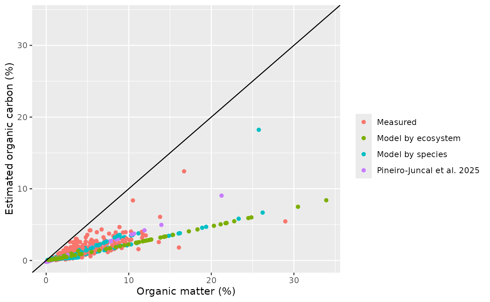

In this vignette we will use the example data from the BlueCarbon library to estimate the organic carbon stocks in the first 75 cm and 1 meter of the soil and the average organic carbon sequestration rates of these soils in the last 100 and 200 years.
Load example data
The first dataframe (core_comp)
has field measurement data that we will use to estimate soil compaction
at core collection.
The second dataframe (bluecarbon_data)
has core field information and laboratory data that we will use to
correct core compaction, estimate organic carbon content in each sample
from organic matter content, and to estimate the organic carbon stocks
and sequestration rates.
The core field information and laboratory data includes: sampling site, core ID, blue carbon ecosystem, dominant species, core compaction percentage, sample minimum depth, sample maximum depth, dry bulk density, organic matter content and (if available) organic carbon content and sample age.
Core compaction estimation
Many field methods to extract soil cores can lead to the compaction of the material retrieved (e.g. manual percussion).
The compaction percentage can be estimated knowing the difference between the original surface level of the soil and the surface level of the soil within the sampler after core insertion and before retrieval.
compaction <- estimate_compaction(core_comp,
core = "core",
sampler_length = "sampler_length",
internal_distance = "internal_distance",
external_distance = "external_distance")
#> Warning in estimate_compaction(core_comp, core = "core", sampler_length =
#> "sampler_length", : Removing cores with missing data: Sm_03_04We got a warning about one core, core Sm_03_04, that has been removed from the final dataframe, as there was missing data. We can look at this core in the example data to see which data was missing.
core_comp[core_comp$core=="Sm_03_04",]
#> core sampler_length internal_distance external_distance
#> 30 Sm_03_04 NA NA NAIn this case, core Sm_03_04 didn’t have data about any of the three variables needed. This are the first 10 rows of the resulting dataframe, including a column with the core compaction percentages.
head(compaction, n = 10)
#> core sampler_length internal_distance external_distance compaction
#> 1 Sg_01_01 200 35 25 5.714286
#> 2 Sg_01_02 200 45 35 6.060606
#> 3 Sg_01_03 200 86 76 8.064516
#> 4 Sg_02_01 200 10 0 5.000000
#> 5 Sg_02_02 200 60 50 6.666667
#> 6 Sg_02_03 200 78 68 7.575758
#> 7 Sg_03_01 200 52 42 6.329114
#> 8 Sg_03_02 200 1 1 0.000000
#> 9 Sg_03_03 200 98 78 16.393443
#> 10 Sg_04_01 200 21 1 10.050251Decompact cores
Core compaction does not affect the final stock of the core. However, it does affect the depth of the core samples. As stocks are given until a known soil depth (e.g. the first meter) to be able to compare among areas, the depth of the samples is needed to properly estimate the final stock.
We use function decompact() to estimate the decompacted
minimum and maximum depth of each sample before stock estimation.
Furthermore, as compaction reduces the volume of the samples, dry bulk
density has to be corrected. This can be done by estimating the
corrected volume by: multiplying the corrected thickness of the sample
(corrected maximum depth - corrected minimum depth) by the area of the
core; or, if compacted dry bulk density is provided, function
decompact() will correct it. To provide compacted dry bulk
density, the name of that column has to be specified in the function
parameter “dbd” as, by default, this parameter is NULL and the function
assumes that it was not provided.
decompact() has 6 parameters:
“df”: data.frame with core properties
“core”: (character) Name of the column with the id of the core to which the sample belongs
“compaction”: (character) Name of the column with core compaction IN PERCENTAGE, as calculated with
estimate_compaction().“mind”: (character) Name of the column with minimum depth of the sample (depth at the top of the sample)
“maxd”: (character) Name of the column with maximum depth of the sample (depth at the bottom of the sample)
“dbd”: (character) Name of the column with dry bulk density
Here we don’t need to specify the name of the columns as in the example data the names are the same as the default names in the function. But we DO need to specify the dry bulk density column name as by default this argument is NULL.
bluecarbon_decompact <- decompact(bluecarbon_data, dbd = "dbd")
#> Warning in decompact(bluecarbon_data, dbd = "dbd"): Setting compaction = 0 for
#> these cores: Sm_03_04, Sg_10_02, Sg_11_03, Sm_05_01, Sm_06_01The warning has given a list of cores that have no compaction percentage data. The function assumes that these cores were not compacted in the field and sets compaction to zero.
Here are the first 10 rows of the final dataframe, with corrected minimum and maximum sample depth and dry bulk density.
head(bluecarbon_decompact, n = 10) |>
kable()| site | core | ecosystem | species | compaction | mind | maxd | dbd | om | oc | age | mind_corrected | maxd_corrected | dbd_corrected |
|---|---|---|---|---|---|---|---|---|---|---|---|---|---|
| Sg_01 | Sg_01_01 | Seagrass | Posidonia oceanica | 5.714286 | 0 | 1 | 0.7352912 | 6.554328 | NA | 8 | 0.000000 | 1.060606 | 0.6932745 |
| Sg_01 | Sg_01_01 | Seagrass | Posidonia oceanica | 5.714286 | 1 | 2 | 0.9754336 | NA | NA | 13 | 1.060606 | 2.121212 | 0.9196945 |
| Sg_01 | Sg_01_01 | Seagrass | Posidonia oceanica | 5.714286 | 2 | 3 | 0.8698411 | 7.382634 | NA | 15 | 2.121212 | 3.181818 | 0.8201359 |
| Sg_01 | Sg_01_01 | Seagrass | Posidonia oceanica | 5.714286 | 3 | 4 | 1.0272564 | NA | NA | 22 | 3.181818 | 4.242424 | 0.9685560 |
| Sg_01 | Sg_01_01 | Seagrass | Posidonia oceanica | 5.714286 | 4 | 5 | 0.9307887 | 8.026647 | NA | 29 | 4.242424 | 5.303030 | 0.8776007 |
| Sg_01 | Sg_01_01 | Seagrass | Posidonia oceanica | 5.714286 | 5 | 6 | 1.4696196 | NA | NA | 35 | 5.303030 | 6.363636 | 1.3856413 |
| Sg_01 | Sg_01_01 | Seagrass | Posidonia oceanica | 5.714286 | 6 | 7 | 1.0500201 | 7.349944 | NA | 38 | 6.363636 | 7.424242 | 0.9900190 |
| Sg_01 | Sg_01_01 | Seagrass | Posidonia oceanica | 5.714286 | 7 | 8 | 0.7396556 | NA | NA | 44 | 7.424242 | 8.484849 | 0.6973896 |
| Sg_01 | Sg_01_01 | Seagrass | Posidonia oceanica | 5.714286 | 8 | 9 | 0.7380564 | 9.431279 | NA | 46 | 8.484849 | 9.545454 | 0.6958817 |
| Sg_01 | Sg_01_01 | Seagrass | Posidonia oceanica | 5.714286 | 9 | 10 | 0.6777988 | NA | NA | 51 | 9.545454 | 10.606061 | 0.6390675 |
Estimation of organic carbon from organic matter
There is a well-known linear relation between organic matter content and organic carbon in soils. This correlation can change between ecosystems and sampling sites due to changes in organic matter composition among other factors. Therefore, it is recommended to estimate this correlation for each batch of samples.
The estimate_oc() estimates the content of organic
carbon for those samples where there are no organic carbon values (but
there may be organic matter values). Estimation of organic carbon is
done by means of linear regressions on log(organic carbon) ~ log(organic
matter). The function returns an organic carbon value for each organic
matter value provided. If there is a value for organic carbon for that
sample it returns the same value; otherwise, it estimates organic carbon
from a model fitted to that site, or a model fitted to that species, or
else a model fitted to that ecosystem. If there are too few samples with
values of organic matter content to build a reliable model or the model
fit is too poor,estimate_oc() uses the equations in Fourqurean et al. (2012) for
seagrasses, Maxwell
et al. (2023) for salt marshes and Piñeiro-Juncal (in prep.) for
mangroves to estimate the organic carbon.
It is unlikely, but possible, that a model predicts higher organic carbon than organic matter content. As this is not possible in nature, the function will give a warning and it is recommended to discard that model.
Fourqureanet al. (2012) Seagrass ecosystems as a globally significant carbon stock. Nat. Geosci.5, 505–509. https://doi.org/10.1038/ngeo1477
Maxwell et al. (2023) Global dataset of soil organic carbon in tidal marshes.Sci.Data 10, 1–14.https://doi.org/10.1038/s41597-023-02633-x
Piñeiro-Juncal et al. (in prep) Soil organic carbon preservation and decay trends in tidal marsh, mangrove and seagrass blue carbon ecosystems.
The function estimate_oc() has 7 parameters:
“df”: A tibble or data.frame containing all the data. Must have at least five columns (see arguments below).
“core”: (character) Name of the column with the id of the core to which the sample belongs
“site”: (character) Name of the column reporting sample site.
“ecosystem”: (character) Name of the column reporting ecosystem type. To apply published equations for OC estimation, ecosystem names should be either “Salt Marsh”, “Seagrass” or “Mangrove”.
“species”: (character) Name of the column reporting the main species in the site.
“om”: (character) Name of the column reporting organic matter values.
“oc”: (character) Name of the column reporting organic carbon values.
Here we don’t need to specify the name of the columns as in the example data the names are the same as the default names.
oc_out <- estimate_oc(bluecarbon_decompact)
#> Warning in estimate_oc(bluecarbon_decompact): The following cores had samples
#> with organic carbon values below the organic carbon range used to built the
#> model: Sg_04_01, Sm_04_03, Sm_04_04, Sm_05_01
#> Warning in estimate_oc(bluecarbon_decompact): The following cores had samples
#> with organic carbon values above the organic carbon range used to built the
#> model: Sg_04_01, Sm_03_01, Sm_04_02, Sm_04_03, Sm_04_04, Sm_05_01The estimate_oc() function produces a plot showing the
relationship between organic matter and organic carbon content, and will
provide warnings if any of the samples had organic matter contents
outside the percentage of organic carbon in the samples used to estimate
the models.
The function returns a list with two elements: [1] the original dataframe with three new columns on the estimated organic carbon, the standard error of the estimate, and the type of model used to estimate the organic carbon value in that sample; and [2] a list of the models estimated, for further inspection.
head(oc_out[[1]]) |>
kable()| site | core | ecosystem | species | compaction | mind | maxd | dbd | om | oc | age | mind_corrected | maxd_corrected | dbd_corrected | eoc | eoc_se | origin |
|---|---|---|---|---|---|---|---|---|---|---|---|---|---|---|---|---|
| Sg_01 | Sg_01_01 | Seagrass | Posidonia oceanica | 5.714286 | 0 | 1 | 0.7352912 | 6.554328 | NA | 8 | 0.000000 | 1.060606 | 0.6932745 | 2.296034 | 0.0458514 | Model by species |
| Sg_01 | Sg_01_01 | Seagrass | Posidonia oceanica | 5.714286 | 1 | 2 | 0.9754336 | NA | NA | 13 | 1.060606 | 2.121212 | 0.9196945 | NA | NA | NA |
| Sg_01 | Sg_01_01 | Seagrass | Posidonia oceanica | 5.714286 | 2 | 3 | 0.8698411 | 7.382634 | NA | 15 | 2.121212 | 3.181818 | 0.8201359 | 2.566545 | 0.0516612 | Model by species |
| Sg_01 | Sg_01_01 | Seagrass | Posidonia oceanica | 5.714286 | 3 | 4 | 1.0272564 | NA | NA | 22 | 3.181818 | 4.242424 | 0.9685560 | NA | NA | NA |
| Sg_01 | Sg_01_01 | Seagrass | Posidonia oceanica | 5.714286 | 4 | 5 | 0.9307887 | 8.026647 | NA | 29 | 4.242424 | 5.303030 | 0.8776007 | 2.775515 | 0.0559117 | Model by species |
| Sg_01 | Sg_01_01 | Seagrass | Posidonia oceanica | 5.714286 | 5 | 6 | 1.4696196 | NA | NA | 35 | 5.303030 | 6.363636 | 1.3856413 | NA | NA | NA |
head(oc_out[[2]], n = 2)
#> $Mangrove
#> $Mangrove$ecosystem_model
#> NULL
#>
#> $Mangrove$multispecies_model
#> NULL
#>
#> $Mangrove$site_models
#> NULL
#>
#>
#> $`Salt Marsh`
#> $`Salt Marsh`$ecosystem_model
#>
#> Call:
#> stats::lm(formula = log(oc_r) ~ log(om_r), data = df)
#>
#> Coefficients:
#> (Intercept) log(om_r)
#> -1.667 1.077
#>
#>
#> $`Salt Marsh`$multispecies_model
#>
#> Call:
#> stats::lm(formula = log(oc_r) ~ log(om_r) * species_r, data = df)
#>
#> Coefficients:
#> (Intercept) log(om_r)
#> -1.9154 1.1678
#> species_rSpartina maritima log(om_r):species_rSpartina maritima
#> 1.0662 -0.4614
#>
#>
#> $`Salt Marsh`$site_models
#> $`Salt Marsh`$site_models$Sm_01
#>
#> Call:
#> stats::lm(formula = log(oc_r) ~ log(om_r), data = df)
#>
#> Coefficients:
#> (Intercept) log(om_r)
#> -0.8492 0.7064
#>
#>
#> $`Salt Marsh`$site_models$Sm_02
#>
#> Call:
#> stats::lm(formula = log(oc_r) ~ log(om_r), data = df)
#>
#> Coefficients:
#> (Intercept) log(om_r)
#> -2.281 1.484
#>
#>
#> $`Salt Marsh`$site_models$Sm_03
#>
#> Call:
#> stats::lm(formula = log(oc_r) ~ log(om_r), data = df)
#>
#> Coefficients:
#> (Intercept) log(om_r)
#> -1.892 1.121Estimation of organic carbon stocks at 1m and 75 cm depth
The organic carbon stock is the accumulated organic carbon mass until
a provided depth per unit area. The default depth of function
estimate_oc_stock() is 100. If the depth of the samples is
provided in cm (as in the example data) this will correspond with 1
meter. If the core does not reach the desired depth (standardization
depth), it extrapolates the stock to that depth from a linear model
between accumulated mass of organic carbon and depth.
The organic carbon mass of each sample is estimated as:
OC=DBD*(OCp/100)*h (Equation 1)
where DBD is the dry bulk density, OCp the organic carbon content in percentage and h the thickness of the sample (maximum depth of the sample - minimum depth of the sample).
It is common to analyze only selected samples of a core to reduce
workload and analytic costs. Therefore, it is necessary to estimate the
organic carbon mass in the spaces between samples to estimate the
accumulated organic carbon mass. The function estimate_h()
distributes these empty spaces between the adjacent samples. This allows
to account for both different sample thickness and different spacing
between samples. Then, the organic carbon mass of that sample will be
estimated following equation 1 with the corrected sample thickness.
The function estimate_h() is already incorporated within
functions estimate_oc_stock(),
test_extrapolation() and estimate_seq_rate(),
and there is no need to run it beforehand.
function estimate_oc_stock() has 7 parameters:
“df”: A data.frame with core (core id), mind (minimum depth of the sample), maxd (maximum depth of the sample), dbd (dry bulk density), oc (organic carbon %)
“depth”: Numeric Maximum depth to estimate the stock, by default 100.
“core”: Character Name of the column reporting core ID.
“mind”: Character Name of the column reporting the minimum depth of each sample.
“maxd”: Character Name of the column reporting the maximum depth of each sample.
“dbd”: Character Name of the column reporting dry bulk density.
“oc”: Character Name of the column reporting organic carbon concentrations.
We used the output from estimate_oc() to estimate the
organic carbon stock per cm2 up to 1m depth. As the column
names from the estimate_oc() output are the same as the
default names in estimate_oc_stock() we don’t need to
specify them. Furthermore, the default depth is 100, and our data is in
cm so we don’t need to specify the depth (i.e. will estimate carbon
stock down to 1m depth).
stocks <- estimate_oc_stock(oc_out[[1]])The output of this function is a dataframe with 5 columns. The first
column is the core ID. The second column (stockwc) is the
carbon stock in the whole core. The third column is the maximum depth of
that core. The fourth column is the stock down to the standardization
depth. Finally, if the core didn’t reach the standardization depth, we
will get a value in the fifth column with the standard error of the
accumulated mass-depth model used to estimate the stock.
head(stocks, n=10)
#> core stockwc maxd stock stock_se
#> 1 Sg_01_01 2.62947377 156.96970 1.8551331 NA
#> 2 Sg_01_02 2.37997169 78.34839 2.9938578 0.092740541
#> 3 Sg_01_03 2.08002346 99.63509 2.1763784 0.069382436
#> 4 Sg_02_01 2.06631095 124.21053 1.6774846 NA
#> 5 Sg_02_02 0.06798487 23.14286 0.3099306 0.015373325
#> 6 Sg_02_03 0.93076430 55.82951 1.6394040 0.055765031
#> 7 Sg_03_01 0.17284439 48.04054 0.3532540 0.007802834
#> 8 Sg_03_02 0.19106567 35.80000 0.5485867 0.021102396
#> 9 Sg_03_03 0.17326199 60.76078 0.3048915 0.021924873
#> 10 Sg_04_01 0.97516409 95.60894 1.1414566 0.055859866The stock units are mass/area to a depth (length). The actual units
will depend on those provided in the original dataframe. In the example
data (bluecarbon_data), the carbon mass will be in g and
the area cm-2 (as the dry bulk density was in
g/cm-3) and the depth will be 100 cm, as the minimum and
maximum depth of the samples was in cm. So the units for the estimated
carbon stock in this case are g/cm-2 in the top 100
cm.
To estimate the stock to a depth different than 100 cm, we have to specify it in the parameter “depth”. For example, to estimate the carbon stock down to 75 cm:
stocks75 <- estimate_oc_stock(oc_out[[1]], depth = 75)
head(stocks75, n = 10)
#> core stockwc maxd stock stock_se
#> 1 Sg_01_01 2.62947377 156.96970 1.5957092 NA
#> 2 Sg_01_02 2.37997169 78.34839 2.2059969 NA
#> 3 Sg_01_03 2.08002346 99.63509 1.7547894 NA
#> 4 Sg_02_01 2.06631095 124.21053 1.3186908 NA
#> 5 Sg_02_02 0.06798487 23.14286 0.2306065 0.011009091
#> 6 Sg_02_03 0.93076430 55.82951 1.2240241 0.038709351
#> 7 Sg_03_01 0.17284439 48.04054 0.2721119 0.005376076
#> 8 Sg_03_02 0.19106567 35.80000 0.4083799 0.014856354
#> 9 Sg_03_03 0.17326199 60.76078 0.2292955 0.015143971
#> 10 Sg_04_01 0.97516409 95.60894 0.9352101 NATest stock extrapolation
With this function (test_extrapolation()) we can
visualize the amount of error that may be introduced by extrapolating
carbon stocks of short cores to a deeper standardization depth. This
function uses those cores that reach the desired depth and tests what
would be the error in the estimated carbon stock if we were to model it
from the 90, 75, 50 and 25% of that depth. This function subsets the
cores that reach the desired depth, estimates the complete stock
(observed stock) to indicated desired depth, estimates the stock from
the linear relation of organic carbon accumulated mass and depth using
the 90, 75, 50 and 25% length of the indicated desired depth, and
compares the observed stock with the stocks estimated by extrapolation.
IT DOES NOT provide the error for those cores modeled by the function
estimate_oc_stock() as that function models those cores
that do not reach the desired depth. This function requires that some of
your cores do reach the desired depth.
function test_extrapolation() has 7 parameters:
“df”: A data.frame with core (core id), mind (minimum depth of the sample), maxd (maximum depth of the sample), dbd (dry bulk density), oc (organic carbon %)
“depth”: Numeric Maximum depth to estimate the stock, by default 100.
“core”: Character Name of the column reporting core ID.
“mind”: Character Name of the column reporting the minimum depth of each sample.
“maxd”: Character Name of the column reporting the maximum depth of each sample.
“dbd”: Character Name of the column reporting dry bulk density.
“oc”: Character Name of the column reporting organic carbon concentrations.
As in the estimate_oc_stock() example, we used the
output from estimate_oc() to estimate the organic carbon
stock per cm2 up to 1m depth. As the column names from the
estimate_oc() output are the same as the default names in
estimate_oc_stock() we don’t need to specify them.
Furthermore, the default depth is 100, and our data is in cm so we don’t
need to specify the depth.
stocks_test <- test_extrapolation(oc_out[[1]])
#> Warning: Removed 4 rows containing non-finite outside the scale range
#> (`stat_boxplot()`).
#> Warning: Removed 4 rows containing missing values or values outside the scale range
#> (`geom_point()`).
#> Warning: Removed 1 row containing missing values or values outside the scale range
#> (`geom_point()`).
#> Warning: Removed 3 rows containing missing values or values outside the scale range
#> (`geom_point()`).This function returns a dataframe with observed and extrapolated stocks, and two plots. The first plot (left) shows the deviation of the extrapolated stock from the observed stock, in percentage of the observed stock. The second plot (right) shows the distribution of the extrapolated and observed stocks. The diagonal line indicate that both stocks are equal. Above that line, the extrapolated stock was overestimated; below the line, the extrapolated stock was underestimated.
The same can be done for a different depth. Like in the example of
estimate_oc_stock() we use 75 by modifying the parameter
“depth”.
stocks_test <- test_extrapolation(oc_out[[1]], depth = 75)
#> Warning: Removed 5 rows containing non-finite outside the scale range
#> (`stat_boxplot()`).
#> Warning: Removed 5 rows containing missing values or values outside the scale range
#> (`geom_point()`).
#> Warning: Removed 1 row containing missing values or values outside the scale range
#> (`geom_point()`).
#> Warning: Removed 4 rows containing missing values or values outside the scale range
#> (`geom_point()`).
Estimate soil organic carbon sequestration rates
In depositional environments, like seagrass meadows, salt marshes and
mangroves forests, it is possible to estimate the sediment accretion
rate of the cores, as long as the sedimentary record has not been mixed.
estimate_seq_rate() estimates the organic carbon
sequestration rates of those cores that have a coherent age-depth model.
The information of the model is included as the age of the sample in a
column of the dataframe (column “age” in the example dataframe). The
function will select those samples that have age data and delete those
without.
Estimations of organic carbon sequestration rates depend on the balance between organic matter burial and degradation. Therefore, the longer the time frame used to estimate the average sequestration rate, the lower the estimated sequestration rate. To be able to compare among cores, all sequestration rates must be standardized to the same time frame.
The function estimate_seq_rate() estimates the average
carbon sequestration rates for a known time frame (100 by default) by
summing the carbon stocks down to that age-depth and dividing by the
time frame. The timeframe always refers to the last period of time (the
last 100, the last 1000, etc…)
estimate_seq_rate() has 8 parameters:
“df”: A data.frame with, at least, columns: core, mind (minimum depth of the sample), maxd (maximum depth of the sample), dbd (dry bulk density), oc (organic carbon %), age (age of the sample obtained from a age-depth or age-accumulated mass model)
“timeframe”: Numeric Standardization time frame, by default 100 years
“core”: Character Name of the column reporting core ID.
“mind”: Character Name of the column reporting the minimum depth of each sample.
“maxd”: Character Name of the column reporting the maximum depth of each sample.
“dbd”: Character Name of the column reporting dry bulk density.
“oc”: Character Name of the column reporting organic carbon concentrations.
“age”: Character Name of the column reporting the age of each sample.
We use the output from estimate_oc() to estimate the
organic carbon sequestration rate per cm2 in the last 100
years. As the column names from the estimate_oc() output
are the same as the default names in estimate_seq_rate() we
don’t need to specify them. Furthermore, the default time frame is
100.
seq_rate <- estimate_seq_rate(oc_out[[1]])The output of this function is a dataframe with 4 columns. The first column is the core ID. The second column is the average sequestration rate in the whole core. The third column is the maximum age of that core. The fourth column is the sequestration rate in the provided time frame.
head(seq_rate, n=10)
#> core seq_rate_wc maxage seq_rate
#> 1 Sg_01_01 0.0020180152 1303.00 0.0043626875
#> 2 Sg_02_01 0.0005423388 3810.00 0.0027556600
#> 3 Sg_03_01 0.0001068260 1618.00 0.0002322665
#> 4 Sg_05_01 0.0023649409 422.00 0.0022770729
#> 5 Mg_01_01 0.0024467131 990.00 0.0040171986
#> 6 Sm_01_01 0.0009239537 1247.00 0.0012018703
#> 7 Sm_02_01 0.0003773279 3096.00 0.0013587956
#> 8 Sm_03_01 0.0012985371 592.00 0.0025806030
#> 9 Sg_06_01 0.0080307101 164.15 0.0069686883
#> 10 Sg_06_02 0.0021769458 776.50 0.0045876577The sequestration rates units are mass/area by time (in the last xxx units of time). The units will be those provided in the dataframe. In the example data, mass will be g and the area cm-2 (as the dry bulk density was in g/cm-3) and both times will be in years, as the age of the samples was in years. So, the sequestration rates units in this example are g/cm-2 yr-1 in the last 100 years.
To estimate the organic carbon sequestration rate in a different timeframe than 100, we have to specify it in the parameter “timeframe”.
seq_rate_200 <- estimate_seq_rate(oc_out[[1]], timeframe = 200)
#> Core Sg_06_01 is younger than the time frame provided
#> Core Sm_07_01 is younger than the time frame provided
#> Core Mg_02_01 is younger than the time frame provided
head(seq_rate_200, n=10)
#> core seq_rate_wc maxage seq_rate
#> 1 Sg_01_01 0.0020180152 1303.00 0.0036333524
#> 2 Sg_02_01 0.0005423388 3810.00 0.0017522040
#> 3 Sg_03_01 0.0001068260 1618.00 0.0001802125
#> 4 Sg_05_01 0.0023649409 422.00 0.0024636800
#> 5 Mg_01_01 0.0024467131 990.00 0.0027250712
#> 6 Sm_01_01 0.0009239537 1247.00 0.0010274819
#> 7 Sm_02_01 0.0003773279 3096.00 0.0007817402
#> 8 Sm_03_01 0.0012985371 592.00 0.0015549084
#> 9 Sg_06_01 0.0080307101 164.15 NA
#> 10 Sg_06_02 0.0021769458 776.50 0.0037439774